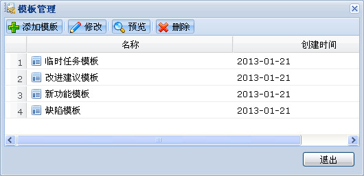

缺陷管理主要负责任务票的管理和相关流程的处理。功能包括建立任务票、处理任务票、任务票查询、维护基础数据、分析统计等功能。
点击查看如何管理项目缺陷？
缺陷管理主界面如下图所示：
图 缺陷管理主界面
实现对基础数据表的维护，包括设置缺陷处理流程、缺陷处理权限两部分。维护基础数据界面，如下图所示：
图 维护基础数据窗口
通过基础数据管理中的工作流程表，设置项目中缺陷的工作流。
缺陷管理的工作流程设置，请点击查看缺陷工作流
通过基础数据管理中的人员操作，给项目中的人员授予有权转入的缺陷状态，只有拥有“有权转入的状态”权限的人员才能看到相关状态。
模板在编辑任务票时可供缺陷报告人选择使用。建立一些通用的缺陷模板能有效的提高缺陷报告人的效率，如缺陷模板，改进建议模板，临时任务模板等。管理任务票模板，包括新建、修改、预览、删除四部分。模板管理界面，如下图所示：

图 模板管理窗口
在项目列表中选择一个项目，然后选择“缺陷管理”，通过任务票列表工具栏的“新建”添加任务票。
任务票即缺陷报告，新建任务票需填写标题，详细的缺陷描述，缺陷所属模块，发现时间、环境，软件版本等信息。另外，缺陷的“发现人”支持手动填写。新建任务票界面如下图所示：
图 新建任务票
通过在工具栏“过滤条件”下拉框中选择不同类型来查看任务票，打开缺陷管理时，默认选择“我的活动任务票”，如下图所示
图 选择任务票过滤条件
任务票的状态描述了任务票的活动情况。简单的缺陷工作流有“新建”、“已打开”、“已重新打开”、“已关闭四种状态，更详细的工作流可以在系统后台自己设定。缺陷填报人提交任务票后状态为“新建”，指定的处理人接受该任务后任务票状态转变为“已打开”，bug处理完后，处理人改变任务票的状态，关闭任务票，此时任务票状态转变为“已关闭”。重新打开关闭了的任务票，任务票的状态转变为“已重新打开。任务票状态的修改在处理任务票的过程中完成。
任务票的状态可以在任务票列表中看到。任务票的状态如下图所示：
图 任务票状态
在任务票列表中选择一条要处理的任务票，通过任务票标题的链接打开任务票进行处理。
处理任务票的过程就是修改任务票的状态，将任务票转移给其他人并描述处理结果的过程。
注意：
在缺陷页面的“其他操作-设置-设置缺陷处置权限”里，可以给用户设置状态权限。只有拥有“有权转入的状态”权限的用户才能看到相关状态。
在处理任务票界面，通过“修改任务票”按钮修改任务票内容。
注意：
修改任务票后重新打开该任务票，界面中会显示“变更历史”即记录任务票的修改情况。
查询分为简单查询和高级查询两个功能。并可在工具栏点击“简单/高级”按钮相互切换。
简单查询是对票号的查询，输入票号查询相应任务票。
高级查询提供多个选择项，可选择（或输入）其中一项或多项内容组合查询。
点击“重置”按钮将重置查询条件，重新选择。
通过工具栏的“分析统计”按钮打开任务票分析统计页面。通过选择不同的选项可以查看任务票按不同属性分布的报表信息，如下图所示：
图 分析统计
图 统计拼图
点击工具栏中“其他操作-输出报表”，可将当前可见的任务票列表下的全部任务票统计输出到报表中，并可输出到word。
任务票导出是将任务票以zip格式压缩包的形式导出，以便将其它系统或者项目的缺陷单移植到另一个项目中。
点击工具栏的“其他操作-导出”，系统弹出导出界面。系统默认导出项目全部任务票，如果选择了一个或多个过滤条件，系统将导出符合过滤条件的全部任务票。选择好过滤条件后可以打包并下载。导出窗口如下图所示：
图 导出窗口
任务票导入主要是将其他系统或项目中导出的缺陷压缩包导入到本项目的缺陷管理中。
选择工具栏的“导入”按钮，系统弹出如下图所示的导入准备界面，在导入准备界面中选择来源单位、目标模块以及其他的条件，然后选择“下一步”进入如下图所示的导入界面，经过上传数据包、检测标准表和导入数据的三步操作后，可以将数据包导入项目。
图 导入准备
图 导入缺陷